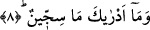
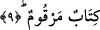

anlamında olduğu gibi bırakmak da mümkündür. “Le fî” kelimesinin içindeki lam harfi
te’kid ifâde etmek üzere getirilmiştir.
“Siccîn” kelimesi büyük bir kitabın özel adıdır. Bu kitap şeytan, kâfir ve fâsıkların
amellerinin içerisine yazılmış olduğu şer dîvanıdır. Kelime gayr-ı munsarıf değildir;
çünkü sâdece bir sebeb mevcuddur o da marife olmasıdır. Siccîn kelimesi “sicn”
kelimesinin “faîl” kalıbında ifâdesidir ve anlamı; ism-i fâilin mubalağası olarak
“hapseden” demektir. Buna karşılık siccîn kelimesini “matruh/atılmış” şeklinde anlamak
da mümkündür. Nitekim siccîn yerin yedi kat dibinde kapkaranlık ve vahşi bir mekanda,
İblis ve neslinin mekanı bir yerdir. İşte yukarda zikredilen kimselerin amel defterlerinin
buraya atılması onları zelil kılmak ve tahkir etmek içindir. Bu amel defterini orada -
mukarreb meleklerin iyilerin amel defterini müşâhede ettikleri gibi- kovulmuş şeytanlar
seyrederler.
Bir başka görüşe göre “siccîn” kelimesi, ism-i mef’ûl olan “mescûn” kelimesinin
mubalağasıdır. Buna göre âyetin mânâsı şöyledir: Ölçü ve tartıyı eksik tutanlar da dâhil
olmak üzere fâcirlerin kitapları/amellerinin yazılı olduğu liste veya amellerinin yazıya
geçirilmesi o tedvin edilmiş, düzenlenmiş kitaptadır. O kitapta zikri geçen kimselerin
çirkin amelleri mevcuddur.
et-Te’vilatu’n-Necmiyye’de bu âyete şöyle mânâ veriliyor: Onların fıtrî istidâd
kitapları, fısk ve fücûr üzere yaratılmış tabiatlarının siccîn divanındadır. Onların bu alın
sayfalarının yaprağı üzerine sol elin kalemiyle yazılmıştır. Nitekim Peygamberimiz
(s.a.) bu anlamı destekleyen şöyle bir ifâde kullanmıştır: “Saîd olan kimse daha
anasının karnında iken saiddir. Şakî olan ise yine daha anasının karnında iken
şakîdir.” [48]
8. Siccîn nedir, bilir misin?
Bu ifâde siccîn’in korkunçluğunu dile getirmek için gelmiştir. Yani hiç kimse onun
nasıl bir şey olduğunu kavrayamaz.
9. (O günahkârların yazısı,) amellerin sayılıp yazıldığı bir kitaptır.
“O yazılmış bir kitaptır.” Rağıb Isfahânî “merkum” kelimesinin kökü olan “rakam”
kelimesinin kalın yazı, çizgi anlamına geldiğini söyler. Bu, yazılara nokta ve hareke
koyarak kitaptaki kapalılığı gidermek demektir. Âyette yer alan “kitabun merkum”